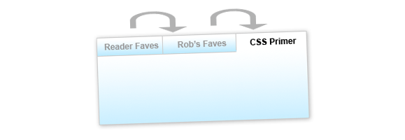
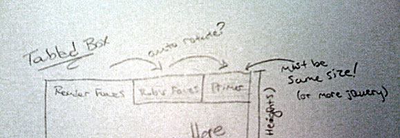
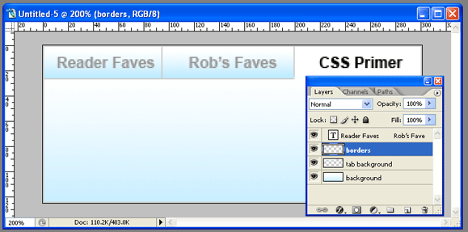
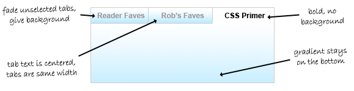

The longer a site has been around, the more content it tends to accumulate. As website operators, we walk a fine line: too much content on every page and your site will look cluttered. Too little, and users won’t be able to find all your website has to offer. A tabbed box like the one pictured above is a nice bridge between the two extremes. It allows you to show off a large amount of content without cluttering up a lot of space. And this tabbed box has extra niceties that are sure to help your content get noticed.
What it Does
At the end of this two-article series, you’ll be able to build a tabbed content box of your own that:
- Is easily customized to fit the size and color scheme of your website.
- Is either fixed or variable height.
- Can automatically rotate through the tabs to draw interest.
- Pauses its rotation when the user interacts with it.
This article will show you how to take the tabbed box from Photoshop to XHTML and CSS, and how to apply the basic jQuery functionality to make the tabs operate. The next article will show you some advanced jQuery techniques to make your tabbed box even more dynamic and eye-catching.
The Photoshop Mockup
Like most of my projects, this one started life as a drawing roughly sketched out on a piece of paper. Despite all the cool tools we web developers have at our disposal, paper and pencil are still by far the fastest way to rapidly prototype a new idea. Here’s a crappy iPhone photo of the drawing:

This is what I mean when I say I’m not a designer, people.
Once you have a good idea as to what you’re looking to do with your tabbed box, it’s time to move into Photoshop (or a similar editing tool). If you’re looking for an extremely barebones tabbed interface you can probably skip this step entirely, but I wanted my tabs to have a little pizzazz. Here’s a look at my Photoshop document:

It’s nothing fancy: just two layers with gradients, a layer creating my borders, and my text. Of course, your layout may be more complex than mine.
When I’m working in Photoshop, I like to stop and think about how I’m going to actually develop what I’m building (and I’d advocate you do the same!). In this case, I knew that I wanted gradients on both my unselected tabs as well as the content box and that my unselected tabs should appear faded. Once I had a pretty good mockup in place, I could start to visualize how my XHTML and CSS would work together to produce the result I was looking for.

The XHTML
Here’s the basic XHTML I decided on for my tabbed box:
<div class="tabbed-box">
<ul class="tabs">
<li><a href="#">Tab #1</a></li>
<li><a href="#">Tab #2</a></li>
<li><a href="#">Tab #3</a></li>
</ul>
<div class="tabbed-content">
<p>Here's my content for tab 1</p>
</div>
<div class="tabbed-content">
<p>Here's my content for tab 2</p>
</div>
<div class="tabbed-content">
<p>Here's my content for tab 3</p>
</div>
</div>
I wanted to keep my XHTML as simple as possible, so that if I ever wanted to update the content my tabbed box, I wouldn’t have to dig through a lot of extra code to do so. The box has three basic components: a wrapper div (tabbed-box) that holds my entire box together, an unordered list with links that will function as my tabs, and a series of divs (tabbed-content) to function as the containers for my tabbed content.
I decided early on to stay away from extra IDs on all my elements as much as possible, to keep the updating process as simple as possible. Of course, that meant my jQuery would have to work smarter to figure out how the box works… but we’ll get to that later.
The CSS
Developing the CSS for this box does take a little math and a good understanding of the box model, but it’s not overly complex. First we’ll style our container box:
.tabbed-box {
width: 302px;
background: #fff url(tabbed-body-bg.jpg) repeat-x bottom;
border: 1px solid #ddd; }
The width here is the most difficult number to determine. To come up with the number, I need to know two things: how much space I have to work with, and the number of tabs I plan to have. (I could probably calculate all this dynamically in jQuery, but I prefer to use CSS to accomplish as much as possible before turning to scripting.)
The space allotted is determined by the size of the tabbed box’s containing element: I built this box with CSS Newbie’s sidebar in mind, which gave me just over 300px of breathing room. Next up, I need to consider the number of tabs I’ll have. My box will have three tabs. If each of those tabs are 100px wide, they then use 3 * 100 (300) pixels of space. But don’t forget: according to our design, two of those tabs will need a border on one side to create the tabbed effect. This results in another two pixels added to our width, for a total of 100 * 3 + 2 (302) pixels. But remember, with the borders I added to my tabbed-box class, my final overall width is 100 * 3 + 2 + 2 (304) pixels.
Next up, we’ll style our tabs:
.tabbed-box .tabs li {
list-style: none;
float: left; }
.tabbed-box .tabs li a {
display: block;
width: 100px;
padding: 5px 0;
font-weight: bold;
text-align: center;
text-decoration: none;
color: #888;
background: #fff url(tabbed-tab-bg.jpg) repeat-x bottom;
border-left: 1px solid #ddd;
border-bottom: 1px solid #ddd;}
.tabbed-box .tabs li:first-child a {
border-left: none; }
First I’m removing the list style and floating my tabs to the left to get them lined up horizontally. Next I’m making them block-level, so the entire tab becomes clickable. Then I’m setting them to the appropriate width (100px in this case), giving them some padding, styling the text, applying my gradient background, and applying my borders to the left and bottom sides.
Next I have a rather specific rule: I’m removing the left border on the first-child element: this means that my very first tab won’t have a border on its left side, since the containing box has a border there and we don’t want to double up. Of course, first-child isn’t supported by Internet Explorer 6… but don’t worry, we’ll account for that in our jQuery.
Then all we have left to get our tabs in working order is to set how they behave in three states: hover, focus, and “active”:
.tabbed-box .tabs li a:hover {
color: #333; }
.tabbed-box .tabs li a:focus {
outline: none; }
.tabbed-box .tabs li a.active {
background: #fff;
color: #333;
border-bottom: 1px solid #fff; }
I’m giving my tabs a slightly darker text color in the hover state, to help the user see when they’re hovering. The focus state is there simply to remove the resulting outline in Firefox when the user clicks a tab: if you’re one of those who insist on having a focus state, feel free to leave this rule out. And finally, we have an active class. This class will be applied by our jQuery to the tab that is currently open. Here we’re removing the bottom border and changing the background color to give it the appearance of an open tab.
And last but not least, we need to apply some styles to our tabbed-content divs:
.tabbed-content {
padding: 3em 1em 1em 1em;
display: none; }
The padding simply pushes the content away from the edges of our box. You can set this to whatever you wish. And our display rule hides all our content, until it’s called upon by our jQuery.
The jQuery
Since we’re using the jQuery library to do most of our heavy lifting here, you’ll need to include the jQuery library somewhere above the following code.
Because I decided to write my XHTML without a lot of extra IDs and classes, my jQuery is going to have to be a lot smarter when it comes to figuring out which tabs display which content. My rationale is pretty straightforward: the first anchor in my unordered list should open the first tabbed-content div, the second one the second, and so on down the line. Because our logic is so straightfoward, I can rely on the jQuery index functionality to do a lot of the hard math.
var currentTab = 0;
function openTab(clickedTab) {
var thisTab = $(".tabbed-box .tabs a").index(clickedTab);
$(".tabbed-box .tabs li a").removeClass("active");
$(".tabbed-box .tabs li a:eq("+thisTab+")").addClass("active");
$(".tabbed-box .tabbed-content").hide();
$(".tabbed-box .tabbed-content:eq("+thisTab+")").show();
currentTab = thisTab;
}
I start out by declaring a global variable that I’ll use throughout the script: currentTab. The currentTab variable will hold the index (an internal counter, like in an array) of the tab we’re currently on. It will also serve later to decide which tab we open by default.
Our function looks more complicated than it is. It requires one variable to be passed it: the clickedTab variable, otherwise known as the tab the user just clicked on. It then calculates the index of that tab (if it was the 3rd tab, the index would be 2) and saves that number as thisTab.
Next, the script cycles through all our tabs and removes any instances of the “active” class if finds, before cycling through a second time and applying the active class to the tab that has the same index number as the tab that was clicked on (in other words, the same tab). This ensures we only ever have one active tab at a time. Then we cycle through our content boxes, hiding them all before cycling through again and showing only the one box that has the same index as our tab… meaning if the third tab was clicked, the third box will open. That bit of math is what saves us from having to apply IDs to all of our tabs and content boxes. Then we set the currentTab variable to our newly open tab’s index.
Now that our function is written, we can get our tabbed box ready for prime time:
$(document).ready(function() {
$(".tabs li:eq(0) a").css("border-left", "none");
$(".tabbed-box .tabs li a").click(function() {
openTab($(this)); return false;
});
$(".tabbed-box .tabs li a:eq("+currentTab+")").click()
});
The first line in our document ready function removes the left border of the first tab. Our CSS handled this for all browsers but IE6, but this bit of code takes care of IE6 as well.
Next, I’ve written a click function that will fire any time anyone clicks on any of our tabs. It only has two parts. First, it fires the openTab function, sending it a variable called “$(this)”. In jQuery, the $(this) variable in a function is always populated with the element on which the function was applied. So if the user clicks on the 2nd tab, our $(this) variable would contain that element. The “return false” after our function prevents the browser from trying to go to whatever we put in our anchor’s href.
And last but certainly not least, our final line forces a click on the tab with an ID that matches currentTab. In my example, that’s the first tab, but you can set currentTab to whatever you’d like to start, so long as currentTab is at least one less than the total number of tabs (since we start counting at zero).
And with that, we have a functioning tabbed box!
You can see this box in action here. The demo contains all the XHTML, CSS and jQuery you need to get this box up and running on your own site.
My next article will cover some advanced tricks you can do with this box, like getting it to cycle through automatically to catch the user’s eye… and how to stop the box from cycling once it has the user’s attention. To be sure to catch the article, you may want to subscribe to my newsfeed.
I have successfully made one tab but how do I add another one? I tried to follow what Naminder said but it didn’t work. :(
I guys,
I like this tab very much.
Can someone help, where can I downland exact scripts for this tab.
Cheers,
Lopsang
Pingback: 25 Jquery уроков по улучшенную навигации
This is so perfect…except that I need unique ids for the tabs so that I can use different images as backgrounds for the .active states.
I assume the best way is to pass the incremental variable (thisTab?) onto the end of the .active class so it becomes .active1 then .active2 etc.
I can’t get it to work. Can someone please offer a suggestion?
Folks, I’m so close, I think…Here’s what I did:
1) Dupe the .active class style to .active0 .active1 .active2 and put a custom background in each.
2) Try to increment the .active state in the loop. From the code:
function openTab(clickedTab) {
var thisTab = $(“.tabbed-box .tabs a”).index(clickedTab);
$(“.tabbed-box .tabs li a”).removeClass(“active”);
$(“.tabbed-box .tabs li a:eq(“+thisTab+”)”).addClass(“active”);
$(“.tabbed-box .tabbed-content”).hide();
$(“.tabbed-box .tabbed-content:eq(“+thisTab+”)”).show();
currentTab = thisTab;
}
I tried the following:
function openTab(clickedTab) {
var thisTab = $(“.tabbed-box .tabs a”).index(clickedTab);
$(“.tabbed-box .tabs li a”).removeClass(“active” + thisTab);
$(“.tabbed-box .tabs li a:eq(“+thisTab+”)”).addClass(“active” + thisTab);
$(“.tabbed-box .tabbed-content”).hide();
$(“.tabbed-box .tabbed-content:eq(“+thisTab+”)”).show();
currentTab = thisTab;
}
And it actually indexes the .active state! But unfortunately it doesn’t start right (tried changing the initial currentTab variable) and it doesn’t remove the last state. Please someone tell me how I can fix this!
Hi Paul,
I ~think~ I understand what you’re after, and if so, you should be able to just give each of the tab areas a unique ID in addition to a standard class. And then you could write a CSS rule something like:
.tabbed-box .tabs li a.active#myUniqueTab1 { background: url(whatever.jpg); }
.tabbed-box .tabs li a.active#myUniqueTab2 { background: url(whatever.jpg); }
At that point, you wouldn’t need to adjust the JavaScript whatsoever.
If this isn’t the sort of thing you’re looking for, let me know. Some additional clarification may be in order. :)
Rob, you’re awesome. I can’t believe I didn’t realize that. Thanks for such a prompt reply!
Unfortunately my first tab is not showing at all, despite all my troubleshooting. Weird. I’ll try to track it down.
How do I add another tabbed box? I’ve tried added two on the same page but after adding the 2nd it breaks the first one.
Pingback: 30+ Best jQuery Tutorials & Plugins for Beginners | Infopioneer
Pingback: 100 Popular jQuery Examples, Plugins and Tutorials « Impact Web Design Tidbits Blog
Pingback: 42 jQuery Navigation based Techniques | palkistore
Pingback: 25 jQuery Tutorials for Improved Navigation Menus | Submit Links
I got the idea and used it in a different way and used it 3 times on same page without creating different function for it.
Thank you for this great Idea
Pingback: 20 Remakable jQuery Navigation Tutorials | WEBAXES
Pingback: 100 Popular jQuery Examples, Plugins and Tutorials | Agência de Criação de Sites, WebSites Descomplique – BLOG
Very Use full css here. it will help me in my work. Suggest me how can i Improve my website Css. Visit hereLink building Company india
This may also helpfull for web developers http://j.gs/792819/jsanimation
Pingback: Que es Ajax..Jquery , ejemplos y tutoriales con C# .NET y PHP.. | Achocoza
Have you ever thought of including additional films on your web sites to hold the future prospect more interested? Come on, man Someone said all through the article of yours and it was quite fine speculate Im really a visual learner,Check this site out for that to be more helpful well told me the way it seems! I love what you guys are always up too. Such ingenious work and credit reporting!
Pingback: 100 Popular jQuery Examples, Plugins and Tutorials | TutsAcademy | Programming, Tutorials, jQuery, Ajax, PHP, MySQL and Demos
Thanks for the nice tabs – my first time using jQuery!
While my first set of tabs work, I want to use 100+ sets on the same page and I am having a problem with the second one.
Problem: only 1 set of tabs is allowed to be open at any time — I need any set open at any given time.
Any help is most appreciated.
Hi,
Thanks for sharing this. I was concerned because this is all new to me, but I was able to easily set it up and modify it. The only issue I have is with * { margin: 0; padding: 0; } in the css code. What does it do? I find that if I put it in then the rest of my pages don’t have formatting and the box works. If I leave it out my pages are fine but the box isn’t formatted correctly.
Thanks!
Sheila
Pingback: 24个jquery菜单导航 | 鹭鹭设计室博客-青岛网站建设|致力于最好的网站设计
Thanks for the wonderful way of description But i m not familiar with
javasript n jquery that,s why not understand it.
Well you done a brilliant job
Well Done………. :)
Pingback: Ny design och whatnot…. | Eke Smiss Lantgård
Pingback: BUILD A TABBED BOX WITH CSS AND JQUERY | PSD.co | Find New CSS Snippets for free
Pingback: 25 jQuery navigation menu design _ plug and Download Web Page Design | Web Page Design Templates | Html5 Template
Thanks alot for sharing
Very simple and useful article for tabbed navigation.
Pingback: 111 jquery tutorial and plugins package | Web Designer Blog – Webdesigner Place
Thanks for this simple solution that functions perfectly in all the browsers.
However, how can I link directly to a tab?
Hm, isn’t that to complicate? If you use the magicBox from http://jb-webs.com and theme roller from jquery, you can make style just by drag and drop, with preview and use it like templates … isn’t that easier – I mean, mostly this is predefined and organised by jquery and works out of the box … but OK, if you want high, high, high style profiles you could maybe rework jquery images and css – but seems me a hell of a work …
Pingback: 25 tutoriales de jQuery para mejorar los menús de un sitio web